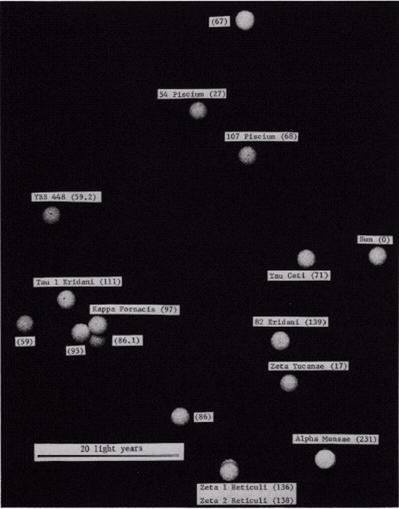
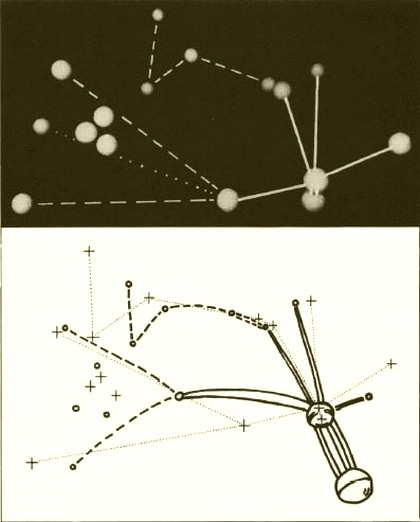
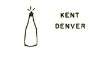
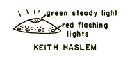
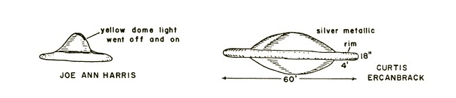

Frank B. Salisbury is with the Plant Science Department, Utah State University, Logan, UT 84321.
In , an article of mine was published in these pages presenting some of the reasons why a few
members of the scientific community were finding the scientific investigation of Unidentified Flying Objects (UFO's)
to be an interesting kind of hobby, if nothing else. The article discussed five hypotheses that have been suggested to
account for the UFO phenomenon. It was argued that none of the first four hypotheses was sufficient in itself or in
combination with others to account for the phenomenon: The vast majority of UFO sightings do prove to be conventional
or natural phenomena misinterpreted, but a few intriguing sightings do not seem to fit this explanation and have
little in common with the explained ones; the UFO's go too far back in history to be modern technical developments
(e.g., secret weapons); psychology is always involved in UFO studies, but psychological manifestations do not provide
sufficient explanation; and numerous excellent cases cannot be shown to be hoaxes or lies (although it is usually
impossible to prove that they are not). The fifth hypothesis, that of extraterrestrial intelligence (ETI), has
likewise not been proven in a rigorous scientific way; neither has it been disproven. Some sixth acceptable hypothesis
that would fit all the facts (e.g., are they manifestations from some other space-time framework, as Keel Keel, J. A.
Kell, J. A.: 1970. UFOs: Operation Trojan Horse. G. P. Putnam's Sons, New York. 320 pp.Keel, J. A.: 1975. The Mothman Prophecies. Saturday Review Press, New York. 269 pp. has
suggested?) may not have come to our attention or may not yet have been conceived.
This article is written to recount a few important events since . The problem is persistent, and an
increasing number of scientists are becoming interested. The Aerial Phenomena Research Organization (APRO) now lists
over 40 scientifically trained consultants who are at least willing to consider the ETI hypothesis and to take part in
investigation of cases. The Center for UFO Studies was recently organized (see below), being made up exclusively of
scientifically trained individuals (22 so far). A few scientists say that they are convinced of the validity of the
ETI hypothesis as an explanation for many UFO's. Others (including myself) are not willing to go quite that far,
although we emphasize that the evidence for ETI is strong. A few scientists continue to reject ETI as an explanation
for the UFO phenomenon.
The noise level (i.e., the percentage of cases explained under the first four hypotheses) remains high, but the
absolute number of truly interesting cases is also high (at least tens of thousands). The question of whether these
cases may respresent a meaningful signal is probably the main reason why an increasing number of scientists have
become interested.
Of course the exobiological implications of the ETI hypothesis are also extremely intriguing. There is much talk
today about the problems involved in discovering life on other planets. But consider the implications if such life has
already discovered us! (Although if it has, it must not want to be friends in the sense of establishing formal,
diplomatic relationships with the governments of earth.) There have been a number of interesting developments since
that also add interest to the topic. Some of these are political, some organizational, some
methodological, and some concern specific cases.
Political developments
As everyone knows, a contract was signed in between the United States Air Force and the University of Colorado for support of a scientific evaluation of the UFO phenomenon under the
direction of the late Edward U. Condon. The final report was released in 1969 after
being submitted to the NASCondon, E. U. 1969. Scientific Study of Unidentified Flying Objects. Bantam Books, New York. 965 pp.
. The rather thick volume details investigations of 59 cases by Condon's staff, which (including consultants,
etc.) consisted of 1 psychiatrist, 7 psychologists, 6 engineers, 13 physicists and/or-astronomers, 4 meteorologists,
7 editor-indexer-photojournalist-programmers, and not one biologist!
The introduction was written by Condon and is an extremely negative statement, concluding that UFO's are not worthy
of scientific study. This statement had an immediate and profound impact upon public thinking. The public is fickle,
however, and this negative impact was relatively short-lived. A Gallup poll indicated that about
11% of the population of the United States claims to have seen a UFO and that over 50% accept the ETI hypothesis;
these figures are slightly more than double comparable figures obtained in . As the Condon report
was studied more carefully, the introduction by Condon was increasingly ignored. The investigations were in depth,
and the report includes a number of extremely fascinating unsolved cases that have been used to support the ETI
hypothesis and the contention that UFO's are indeed of the highest intrinsic scientific interest.
Furthermore, discovery and publication of a memo written by Robert J. Low (who became
project coordinator) three months before the contract was awarded clearly demonstrated that the study was prejudiced
from the beginning. It includes the following passage: The trick would be, I think, to describe the project so
that, to the public, it would appear a totally objective study but, to the scientific community, would present the
image of a group of nonbelievers trying their best to be objective but having an almost zero expectation of
finding a saucer (Walter Sullivan's introduction to Condon 1969 includes the passage). Furthermore, Condon
himself never investigated a case, but in his lectures and articles on the subject, he often resorted to ridicule
and much preoccupation with the lunatic fringe. Hynek (1972) has presented a balanced scientific criticism of the
Condon and Air Force studies. As an astronomer, he was scientific consultant to the Air Force UFO project for 20
years.
An immediate result of the Condon report was that the Air Force dropped its project Blue Book, the canopy under
which it had been assembling and supposedly investigating UFO sightings since the late 1940's. (Other names for the
project were used during that history.) Most of us who were concerned with scientific UFO investigations were happy
to see this move. Blue Book had never performed an objective study but was committed by directive to the goal of
explaining all cases that came to its attention. It threw up a smoke screen for two decades with its frequent press
releases to the effect that 90+% of the cases had been "explained" and that, given a little more information, the
rest would probably fall into line. (The latter idea, if not always explicitly stated, was at least implied.)
There seems to be evidence that governments are taking a little less prejudiced view of the UFO phenomenon.
Government statements in both France and Brazil have acknowledged that UFO's might represent ETI. There is even
evidence that the United States government and the mass media are taking a somewhat softer line Lorenzen, L. J. 1974.
The Barra Da Tijuca case. Pages 8-10 in C. E. Lorenzen, ed. Proc. of the 5th APRO UFO Symposium, Pottstown, Pennsylvania. Aerial Phenomena Research Organization, 3910 E.
. Already we have seen a number of rather objective movies, TV programs, and the like.
Organizational developments
A number of civilian groups devoted to UFO study (at various levels of scientific capability) spontaneously
appeared during the 1950's. In the United States the APRO and the National Investigations Committee on
Aerial Phenomena (NICAP) were among the first and have become the largest and most prestigious of these groups. For
many years their approaches were somewhat different - APRO had more of an international flavor; NICAP was dedicated
to the idea that the Air Force was withholding information - but in recent years they have begun to cooperate in
various formal and informal ways. They have also become somewhat more conservative, and the level of scientific
sophistication of their studies has increased noticeably. The International Fortrean Organization (INFO) has been
interested in the fringe areas that have been ignored by establishment science and that were championed by the late
Charles FortFort, C. 1919. The Book of the Damned. Reprint.
Holt, Rinehart & Winston, New York, 1941.Fort 1923. New Lands. Reprint. Holt, Rinehart & Winston, New York, 1941.Fort 1931. Lo! Claude Kendall. Holt, Rinehart & Winston, New York.Fort 1969. Aliens in the Sky. Putnam and Sons, New York. 217 pp..
Recently this group has placed more emphasis on UFO studies. Numerous other organizations throughout the world could
also be mentioned, but these three are representative of the better ones.
In , the National Enquirer, a weekly newspaper with a circulation of about 8 million and
headquarters in Lantana, Florida, offered a $50,000 award to the first person who can prove that an Unidentified
Flying Object came from outer space and was not a natural phenomenon. A panel of five scientists was chosen to
judge the submitted evidence. This panel includes Rogert Creegan, a philosopher; James Harder, a civil engineer; J.
Allen Hynek, an astronomer; Leo Sprinkle, a psychologist; and myself. We on the panel
agreed to serve without remuneration because we felt that the award offer might turn up evidence that would
otherwise not come to our attention and because the National Enquirer agreed to underwrite research on the better
cases.
Our attitude has been that we could be convinced, but only if the evidence were strong enough to convince nearly
everyone in the scientific community. That is, the evidence would have to include totally convincing, verifiable,
objective data. At our first meeting, it became apparent that most of the entries were only stories people told. We
felt that the better witnesses might realize that their evidence would not be totally convincing and that therefore
they would not bother to submit it. Thus it was suggested to the Enquirer that an annual prize of $5,000 be awarded
for data judged to be most valuable from a scientific standpoint. Many excellent cases have come to the attention of
our panel, and three of the $5,000 awards have been presented (two are reported below). So far most of us on the
panel believe that we have not seen anything approaching total proof, although one or two panel members think that
certain cases still under investigation may come close.
Most recently J. Allen Hynek, director of the Lindheimer Observatory and chairman of
the Astronomy Department at Northwestern University, has established the Center for UFO Studies. Members of this
organization must have high scientific credentials (degrees and publication records) in their fields of specialty.
The center has obtained use of a toll-free police hotline through which cases can be immediately reported (via local
police departments). It is hoped that the center will assist in obtaining the kind of verifiable objective data that
are ultimately necessary, as well as continuing to accumulate the more subjective accounts that, taken as a whole,
continue to provide much insight into the phenomenon.
Methodological developments
UFO buffs have always gotten together for meetings, which have usually included much sociability and considerable
presentation of testimonies from some of the more spectacular UFO witnesses. During the past few years, however,
there has been a decided trend toward more high-level symposia in which the UFO phenomenon is discussed in
scientific terms.
On , a symposium on Unidentified Flying Objects was sponsored by the AAAS at
its meetings in Boston. The symposium, which resulted in a publication Sagan, C., and T. Page. 1972. UFOs - A Scientific Debate. Cornell University Press, Ithaca, N.Y. 310 pp.
, was conducted on an extremely high scientific level. Several participants were knowledgeable about the UFO
phenomenon and presented papers on both sides of the issue. Others knew virtually nothing about the UFO evidence but
presented papers on related topics (e.g., psychology or unusual radar echoes).
Another high-level symposium was in the form of a congressional hearing, convened by Congressman J. Edward RoushRoush, J. E., ed. 1968. Symposium on Unidentified Flying Objects. U.S. Government Printing Office, Washington, D.C. 247 pp.
and later popularized by John FullerFuller, J. G. 1966. The Interrupted Journey. Putnam and Sons, New York. 302 pp.
.
APRO, with its headquarters in Tucson, Arizona, has been sponsoring symposia for the
past three years. These are open to the public, who pay admission fees, which cover transportation of speakers,
tape-recordings, and so on. The proceedings are published (by the Aerial Phenomena Research Organization, 3910 E.
Kleindale Rd., Tucson, AZ 85712, in , in , , and ,
and in ). Although these discussions are somewhat one-sided in that virtually all participants
are at least highly interested in the ETI hypothesis, they have nevertheless achieved an impressive level of
scientific competence. In several cases, they have demonstrated the extent to which a scientist trained in some
given field can apply his training to an examination of the UFO data. (See also symposium of the Mutual UFO Network
Andrus, W. H., Jr., ed. 1974.
MUFON UFO Symposium Proceedings, June 22, Akron, Ohio. Mutual UFO Network, Inc., 40 Christopher Court, Quincy, IL 62301.
.)
Several books have been published in the UFO field since . Some of these are written by
nonscientists who nevertheless are intimately familiar with the UFO problem and provide excellent analyses and
insights Blum, R., and J. Blum. 1974 Beyond Earth: Man's Contact with UFOs. Bantam Books, New York. 248 pp.Fowler, R. E. 1974. UFOs: Interplanetary Visitors. Exposition Press, New York. 365 pp
.Keyhoe, D. E. 1973. Aliens from Space... The Real Story of Unidentified Flying Objects. Doubleday & Co., Garden City, N.Y. 322 pp..
At least three scientifically trained authors have also written books about UFO's: Vallee Vallée, J. 1965. Anatomy of a Phenomenon. Regnery, Chicago. 372 pp.,
Vallée, J.: 1966. Challenge to Science: The UFO Enigma. Regnery, Chicago. 268 pp.Vallee, J.: 1969. Passport to Magonia. Regnery, Chicago. 210 pp., Hynek (1972), and myself
(1974).
In addition to talking and writing about the UFO phenomenon, several scientists have attempted to develop new
approaches. One of these is to accumulate cases in a computer catalogue, which can then be queried for correlations.
One of the largest of these catalogues has been assembled by David Saunders, an original member of the Condon
research group. His UFOCAT includes about 66,000 entries, representing over 40,000 cases. Jacques Vallée
and others have independent computer catalogues, which are generating highly interesting data.
Saunders' UFOCAT, for example, has been used to examine the periodicity and frequencies of UFO sightings (18.8% of
UFO sightings are on Wednesday, only 9.8% on Sunday; a 61-month cycle has become apparent - see National Enquirer,
). Saunders has also examined extrinsic factors in UFO reporting, based upon population and
other demographic data for counties in the United States. He concluded that more UFO reports come from areas of high
population density (the more people, the more see UFO's), from people with a high school education or better, and
from witnesses living in counties where seeing conditions are best (e.g., deserts where the atmosphere is clear much
of the time) and who have readily available newspapers or other possibilities for reporting. When only reports with
the highest degree of "strangeness" (e.g., close encounters, landings, etc.) were examined, however, they bore no
significant relationship to any of the demographic factors so far studied (as would be predicted if the objects were
real and seen by a random sample of the population). Data were discussed at the as yet
unpublished APRO symposium held in Littleton, Colorado, on .
There are also scientists who are investigating UFO cases from the standpoint of psychology or sociology (e.g.,
Eisenbud Eisenbud, J. Psychiatric considerations. In Proc. of Aerial Phenomena Research Organization Symposium held in
Littleton, Colorado, 15 July 1974. Aerial Phenomena Research organization, Arizona, in press.Schwartz, B. E. 1974. UFO table talk (Josh and the psychiatrist). Pages 14-18
in C. E. Lorenzen, ed. Proc. of the 5th APRO UFO Symposium, Pottstown, Pennsylvania. Aerial Phenomena Research Organization, 3910 E. Kleindale Road, Tucson, AZ 85712.
and Sprinkle Sprinkle,L. Psychic impressions of UFO. In Proc. of Aerial Phenomena Research Organization Symposium held in
Littleton, Colorado, 15 July 1974. Aerial Phenomena Research organization, Arizona, in press.). Sometimes these
investigators are willing to consider extrasensory perception or even out-of-body experiences in their studies, and
hypnosis is frequently used as a tool in interviews. There has also been a detailed analysis of photographs Lorenzen, L. J. 1974. The Barra Da Tijuca case. Pages 8-10 in C. E. Lorenzen, ed. Proc. of the 5th APRO UFO Symposium, Pottstown, Pennsylvania. Aerial Phenomena Research Organization, 3910 E.
and several intensive studies of individual cases Spickler, T. 1974. Analysis of an AirGround Multiple-Witness, Radar-Confirmed UFO Report.
Pages 11-14 in C. E. Lorenzen, ed. Proc. of the 5th APRO UFO Symposium, Pottstown, Pennsylvania. Aerial
Phenomena Research Organization, 3910 E. Kleindale Road, Tucson, AZ 85 7 12.
Good recent cases
Some UFO sightings of recent years are especially provocative. They strongly resist any explanation other than the
ETI hypothesis. Since this is the core of UFO
investigation, it would be appropriate to review such cases at length, but of course space will not permit this. To
provide a little flavor, however, I will very briefly outline a few cases with which I am familiar. In each instance
more detailed summaries have been published Salisbury, F. B.— 1974. The Utah UFO Display: A
Biologist's Report. Devin-Adair Co., Old Greenwich, Connecticut. 286 pp..
Delphos, Kansas.
After dark on , a glowing object was seen by Ronald Johnson, a high school student of
Delphos, Kansas, hovering close above the farmyard behind the house. His dog was
greatly upset, and the object moved away rather quickly, although his parents were able to see it in the sky
before it disappeared. Where the object had landed, or nearly landed, there was a glowing ring of soil. This was
analyzed at great length by several groups of scientists, and because of all the information generated from these
analyses, the case was given the first $5,000 award from the National Enquirer.
The landing-site soil proved to be highly hydrophobic (impossible to wet), both in place and in the laboratory.
By the time it was collected, about a month after the event, it contained relatively large quantities of fungal
hyphae, but not of a variety likely to bioluminesce. Various possible explanations for the glowing, hydrophobic
soil were proposed, but none seemed completely satisfactory, and the case remains a strong one.
Captain Coyn's (sic) Levitating Helicopter.
On , at 11:10 p.m., Captain Larry Coyn[e] was commanding a helicopter flying in Ohio with
three crew members. They spotted a red light on the
horizon, which was approaching the helicopter at high speed on a collision course. Coyne took the controls
and put the chopper into a steep dive. When the UFO was within about 500feetBecause of the nature of this paper, BioScience has not required use of the metric
system. All witness estimates of size, shape, distance,
speed, etc., have been kept in their original format., the crew (bracing for impact) could clearly see it
as a metallic gray, cigarshaped object with a dome on top and a red light on the front. At that point, the chopper
was at about 1500feet elevation, the radio went dead, and instead of colliding the UFO suddenly hovered closely above for a few
seconds (sharply changing speed and direction to do so). A brilliant green spotlight swung from the rear tip of
the UFO, illuminating the cockpit so brilliantly that the red lights inside were pale by comparison. The UFO
turned and sped off to the north. Coyne then put his attention to the controls to stop the power dive, only to
discover that, although the controls were still set for the dive, their elevation was 3800feet. They had been lifted over 2000feet without the controls being changed and with no sensation of lifting!
The four witnesses were highly trained in aerial observation. The UFO came extremely close, exhibiting detailed
structure. Its behavior, including the sharp changes in speed and direction and especially the levitation of the
helicopter, was fantastic to say the least. It seems that the only alternative to the ETI hypothesis is that the
witnesses were not telling the truth, yet in view of the circumstances (not thoroughly discussed here) this seems
highly unlikely to all who have investigated the case. Captain Coyne and his crew members received the second
$5,000 award from the National Enquirer for their recording of the details of this case. (There is no evidence
that they knew about the award before telling their story.)
Betty Hill and Marjorie Fish

Fig. 1. The Marjorie Fish star model. Using data supplied by David Saunders, the author constructed a
model of the map. The star positions were calculated by a special computer program prepared by Dr. Saunders,
which gives the star positions in an x-y-z coordinate system such that the x-y plane is the central plane of the
flattened star duster. This is a photograph of the model taken from directly above the x-y plane at about the z
axis. The scale of the model is 1 cm = 1 light year, and the styrofoam balls are about 2.5 cm in diameter. The
star positions farthest from the sun are accurate to about 2 light years. Labels on the photograph give the star
names (if any) and the Gliese Catalogue number in parentheses.
John FullerFuller, J. G. 1966. The Interrupted Journey. Putnam and Sons, New York. 302 pp.
publicized the experience of Betty and Barny Hill, who were driving late at night through New Hampshire when they
encountered a UFO. They reported that they could not account for over two hours of time, but about two years later
in the office of Dr. Benjamin Simon of Boston, they allegedly recalled under hypnosis what had happened during the
missing interval of time. They had been taken aboard the UFO, examined, and interviewed by the UFO occupants. The
story seems incredible in many ways and almost certainly includes distortions (probably dreamed), but a recent
development has renewed interest in the case.
At one point during the visit on board the UFO, Betty asked about its origin. The leader showed her a
three-dimensional star map. Dr. Simon suggested that she would remember the map with vivid clarity during the week
following the hypnotic session in which the map was mentioned. She was to sketch the map as she remembered it. The
result was published in Fuller's book.

Fig. 2. Top: An oblique photograph of the model in Fig. 1 from the most likely viewing position of
Betty Hill, assuming that Zeta Tucanae (17) is eclipsed by Zeta 1 Reticuli (136). The photograph was taken with
a wide-angle lens from an equivalent distance of 50 light years to Zeta Reticuli (136 and 138), and the relative
sizes of the balls provide the perspective. Lines were drawn on the negative with India ink. Saunders prefers
YBS 448 (59.2) t o Tau 1 Eridani (111), the star chosen by Marjorie Fish for the upper left position. Clearly
the choice of Tau 1 Eridani (111) makes a better match with the Betty Hill map, but this star is considerably
less likely to have life-supporting planets than YBS 448 (59.2). Bottom: Betty Hill's map compared with
Marjorie's model. (See text.) The heavy, free-hand lines are traced from Betty's drawing, the crosses and fine
dotted lines from Marjorie's photograph of her model. (Original drawing was by Marjorie Fish, used with
permission.) (From Salisbury, F. B.— 1974. The Utah UFO Display: A
Biologist's Report. Devin-Adair Co., Old Greenwich, Connecticut. 286 pp., with permission.)
Marjorie Fish, a grade school teacher in Oak Harbor, Michigan, read Fuller's book and was intrigued with the star map. Since about
she had studied the astronomical principles required to plot in three-dimensional space the
positions of stars in the vicinity of the sun. Her initial attempts showed no relationship to the Betty Hill star
map, but after the publication of a new star catalogue in , she made corrections in several of
the star positions. Furthermore, Marjorie Fish decided that she should eliminate from
her model all stars not likely to have planets suitable for life as we know it (stars on either end of the main
sequence, double star systems, and variable stars). When the corrections were made and the unlikely stars
eliminated, a pattern resembling the Betty Hill map soon became apparent (after assuming that one of the stars
eclipsed another, which assumption provided the correct number of stars and determined the viewing position).
Results of this exercise are shown in Figs. 1 and 2, although there are many more details that could be considered
if space allowed Dickinson, T. 1974. The Zeta Reticuli incident. Astronomy 2(12): 4-18..
The resemblance between the Betty Hill and the Marjorie Fish star maps could be pure
coincidence. No one has yet thought of a convincing way to assess the statistical probability that this is the
case. On the other hand, the history of Marjorie Fish's map building and the outstanding similarities of certain
details such as the two close stars and the triangle of three are very impressive.
The Flap of 1973
During the autumn of , numerous UFO's were reported all over the world. It is too soon to
expect a detailed summary of all this material. Probably it will take years to assemble, if anyone is working on
it. Blum and Blum Blum, R., and J. Blum. 1974 Beyond Earth: Man's Contact with UFOs. Bantam Books, New York. 248 pp.
published a popular book which summarizes some of the more spectacular cases.
Probably the one that received the most attention from the news media was the encounter on of two
fishermen in Pascagoula, Mississippi, with a UFO and its strange silvery-skinned beings
who levitated the fishermen into the craft where they were apparently subjected to some kind of automated
examination. The story is a completely wild one, yet those who have investigated the two fishermen come away
impressed. There seems to be no doubt that they had an extremely traumatic, shocking experience. There is
certainly no obvious reason why or how they should or could fabricate their wild story while in such a state of
emotional upset. At the same time, the story is so completely contrary to all our preconceptions that we find it
virtually impossible to accept. Captain Coyne's levitating helicopter is almost as contrary to our present
convictions about how the universe functions, but for some reason it is not as intrinsically repulsive to us as
the strange beings at Pascagoula.
The Uintah Basin UFO Display
My own closest encounter with the UFO phenomenon came via a number of interviews with UFO witnesses in
northeastern Utah Salisbury, F. B.— 1974. The Utah UFO Display: A
Biologist's Report. Devin-Adair Co., Old Greenwich, Connecticut. 286 pp.. I began interviewing witnesses in
and have continued these interviews sporadically to the present. The initial data were assembled
by Joseph Junior Hicks, a junior high school science teacher in Roosevelt, Utah.
He became known as the local world authority on UFO's, and witnesses reported their sightings to him. Although
space limits the material that can be presented here, such stories are the heart of the matter as far as I am
concerned. Hence, I will present the barest skeletons of 7 cases taken from the 80 in Hicks' file, plus 1 (the
first) reported to me directly. These include some of the best cases, but others are as good Some of the Uintah Basin witnesses made drawings of what they saw. For those specifically mentioned here, the
drawings have been placed with their accounts. Others have been grouped together in Fig. 3. (From Salisbury, F. B.— 1974. The Utah UFO Display: A
Biologist's Report. Devin-Adair Co., Old Greenwich, Connecticut. 286 pp.
with permission.).
Dean Powell was leaning on the back of his mail truck around noon when he saw a silvery object hovering in
front of a bluff less than 0.25mile away. He was joined by another witness who saw the object before it departed rapidly eastward.

On , Kent Denver and friends watched a red ball of fire dance around on the horizon
for about .

A little later in the evening, Verl and Leah Haslem were driving home from a bank party when they saw a
brilliant red object hovering above their house. As they sped toward home about 1mile away, the object moved off to the left (southeast) and departed into the sky like a meteor in reverse.
At almost exactly the same time, Joe Ann Harris, with four Indian girls in the back seat of her car and a
large Indian woman in the front seat, encountered a UFO. The object first appeared as a flashing light at a
distance but approached their automobile rapidly until it was 50feet to 100feet in front of the car. It was at least 50feet in diameter, flat on the bottom with a dome on top. The Indian girls were terrified and on the floor in the
back of the car.

The large Indian woman was under the glove compartment. Joe Ann was backing her car away from the object when
another automobile approached from the rear. The object apparently left during an instant while Joe Ann had
her head turned, backing the car. At about the same time, Estel Manwaring was driving 2miles or 3miles away with an Indian girl in the front seat. They apparently saw the same object, this time with brilliant
lights flashing around the rim. After parking to get a better look, the object went straight up with extreme
velocity.
Thyrena Daniels encountered after dark a huge spherical object, flat on the bottom, glowing red, with bluish
to reddish "flames" spouting out horizontally from each side. The UFO, remaining within 100feet to 200feet, preceded her while she drove nearly 30miles from Vernal to Roosevelt, Utah.
A brilliant red, glowing UFO moved across the Uintah Basin while being observed by at least 40 scattered
witnesses (several in groups). Richard Hackford saw the object approaching while driving a truck up a
hairpin-turn logging road in the Uinta Mountains. The object hovered above the cab of his truck, brilliantly
illuminating the surroundings. Night-shift workers at the phosphate plant, perhaps 20miles away, saw the object move across the basin, hover for a moment where Hackford was driving his truck, and
then go into the sky, again like a meteor in reverse.
The Clyde McDonald children told their parents that an Oija Board informed them that a UFO would appear at
8:00 p.m. above the Roosevelt Hospital. The children went out to meet it, and indeed the glowing red sphere was
there just as they had predicted! Their parents and several other people in the town were also witnesses.
Curtis, Kevin, and Bevin Ercanbrack (brothers) were driving a tractor out to a field to bury a dead calf when,
in broad daylight, they saw a large silver object hovering in the field. Before the object left, the three boys
came within 50feet to 100feet of it, according to later estimates.
Morlin Buchanan and Richard Faucett were hunting geese on Pelican Lake at about sunset when they observed what appeared to be a
perfectly spherical balloon with a "string" hanging from below. After driving 8miles with stops to observe the object through binoculars along the way, they came within perhaps a 0.25mile of it, describing it as a huge sphere lit up on the top and bottom (by then it was dark) and with a column
of spinning dust or something hanging from beneath. The column was about 4feet in diameter (referred to by them as a wind tunnel) and perfectly even in diameter top to bottom
(otherwise reminding them of a tornado spout). Finally, the "wind tunnel" seemed to be sucked rapidly into the
object, which then disappeared with a flash of light.
Buchana Meecham UFOs Uintah Basin
Leland Mecham and his young son, Jody, were riding home on horseback late at night when they saw a huge, glowing
red object perhaps 5miles to 7miles away, almost on the horizon but in front of more distant mountains. Beams of light seemed to be emanating
toward the ground from the object, and clouds of billowing red dust could be seen where the rays struck
the ground. An arch of white light extended above the object. While Leland and Jody lost sight of the object
behind some trees, Dee Hullinger and his wife watched it spin once on its axis and shoot into the sky with high
velocity. The red glow and the white dome of light remained for an hour or so, gradually becoming dimmer
until they had disappeared.
These cases have such a high strangeness index that it seems virtually impossible to think of them as
misinterpreted natural phenomena or as secret weapons. Having talked with the witnesses, I cannot personally
accept the idea that they might have been lying or hallucinating, although I cannot prove that they were not.
Logic and challenges
The logic of the UFO problem remains essentially as I described it in : Science is good at
disproving hypotheses, but such an approach fails in this area because it is always impossible to know for certain
that every single case has been proved not to be the product of ETI. Nevertheless, we continue to disprove
cases, and the ones we are unable to disprove continue to accumulate and impress us. We cannot induce from the
disproven cases that the unsolved cases could also be disproven if only we had more data; the unsolved cases often
have little in common with the solved ones.
Neither can we argue that the UFO's cannot represent ETI because that would be impossible. We don't
know enough to make such a statement. Our inability to explain the lack of contact if the UFO's do represent ETI is also not a proof that they do not.
On the other hand, it seems that if we had the right kind of contact, the ETI hypothesis could be proven. It is even
possible that verifiable, objective data could be of such a nature that the ETI hypothesis would be amply demonstrated.
The trouble is that we have not been able to obtain such proof. Perhaps we haven't thought hard enough about the
problem. It seems to me that we even need to consider extreme claims, such as those made by people who claim
personal contact with UFO occupants (who have become known as "contactees"),
simply because by their very nature they might conceivably produce verifiable, objective data. For example, such a
person might predict the time and place of a UFO appearance.
Uintah Basin UFOs - Eyewitness Drawings
It is virtually impossible for the UFO researcher to refrain from taking the next logical step beyond those
discussed so far. What does it mean if the UFO's do represent the intelligent visitors? What are they doing, and
what will be their effects upon our philosophies and upon the world of which we are a part?
The immediate thought when the ETI hypothesis
became a point of public discussion in is that our visitors have just discovered our solar system
and are making preliminary observations. Several aspects of the phenomenon make this "exploration-of-our-planet"
hypothesis a difficult one to accept. The most obvious of these is the observation that the UFO's have been around
for hundreds to thousands of years. That ought to be plenty of time for exploration; why not now land and be
friends? Many of the cases also seem to belie this kind of an explanation. Do the ones summarized above sound like
an exercise in planetary reconnaissance?
To me, they appear staged. I have the impression that it is all a display, a show, a circus. They seem to want to
be seen although not for long. After the witness has had a good chance to look them over, then they typically depart
in haste. What does it all mean? It is possible that we simply cannot fathom the motives of extraterrestrial
visitors.
Are we some kind of experiment? How could we know?
Perhaps the so-called contactees best illustrate the difficulties of scientifically researching UFO's. When they
tell us of their trips to Venus and of the totally impossible conditions there, we simply know that they must be
lying. But there are so many of them, and they seem so sincere. Is it possible that our visitors want to confuse us?
Is it part of their experimental strategy to pick up earthlings, fill their minds with fantastic pictures known by
other earthlings to be untrue, and command them to go back and tell people about these things? Or to generate in the
minds of two Pascagoula fishermen fantastic, but totally convincing, hallucinations (as suggested by Keel Keel, J. A.: 1975. The Mothman Prophecies. Saturday Review Press, New York. 269 pp.)?
Certainly the result of such exercises would be effectively to dissuade members of the scientific community from any
interest in the UFO phenomenon. But why? In any case, it doesn't seem to be working too well, because we are
apparently approaching a time when more and more scientists are considering the UFO enigma in more and more
respectable ways.
One more philosophical point deserves comment. We seem to be living in an age of superstition or scientific
backlash, in which a sizeable segment of the public apparently knows virtually nothing about the application of
reason in seeking for truth (i.e., about the scientific process) but wholeheartedly accepts astrology, thinking
plants, engines that run without fuel, occult topics such as ghosts and astroprojection, and numerous other
aberrations from the spirit of modern science. Inevitably, belief in UFO's is closely associated with all this, and
indeed many people who are caught up in the UFO craze (especially those following one or another of the socalled
contactees) exhibit all the symptoms of those engaging in the other superstitions. A common viewpoint, for example,
is that science is hopelessly off the track, whereas the "believer" has the true knowledge of the universe.
This poses a dilemma for scientists who would investigate UFO's. They must continually be mindful that what a
public thinks about a subject should not be a criterion of whether it is suitable for scientific study. The
important point is whether the scientific approach can be applied; that is, whether one can think of meaningful and
testable hypotheses and observations and whether it is possible to be objective.
UFO's certainly pose some special problems, but with care I think that a scientific approach is possible. The trick
is simply to remain objective against all outside pressures. For example, one must avoid the temptation to answer
the often-repeated question: "Do you believe in UFO's?" Science doesn't "believe" in things; it seeks truth by the
application of logic to objective data (which are admittedly difficult to obtain when it comes to UFO's).
UFOologists must do this even while interacting closely with people, including UFO witnesses, who do not have their
training or viewpoint and who may fail to understand why scientists don't accept the "obvious."